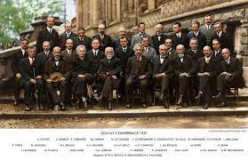

| Sl no | University name | Founder by | Total Strength | Location | Ranking |
|---|---|---|---|---|---|
| 1 | MIT | George Render | 2 million | Georgia, USA | 4 |
| 2 | Oxford | Michaell Happins | 2.5 million | London, UK | 3 |
| 3 | Havard | William k Johnson | 4.7 million | Parris, France | 6 |
| 4 | Waterloo | Padrick Bennington | 1.7 million | Toronto, Canada | 6 |
| 5 | Brisbane University | Elizabeth Casie | Edinburg, Scotland | 95 thousand | 10 |
| 6 | IISC | GOI | Banglore, India | 70 thousand | 56 |
Education is the mirror of society. As we learn new things and we implement it in our life, it becomes more clear that we can make life beautiful and easy.
There are many people who have invented so many things that we are benefitted for that and we call them Scientist. There are many scientist but Albert Einstein, Isaac Newton, Marie Curie are the greatest and there are many more.
| 1 | Name | Invention & Country | Field | |
|---|---|---|---|---|
| 1 | Albert Einstein | Theory of Relativity | Germany | Physics |
| 2 | Isaac Newton | Law of Motion | UK | Physics |
| 3 | Madam Curie | Radium and Radioactive elements | UK | Physics & Chemistry |
| 4 | Gallileo | Radio | Italy | Physics |
| 5 | Louis Pasture | Principle of Vaccination | Greece | Chemistry and Biology |